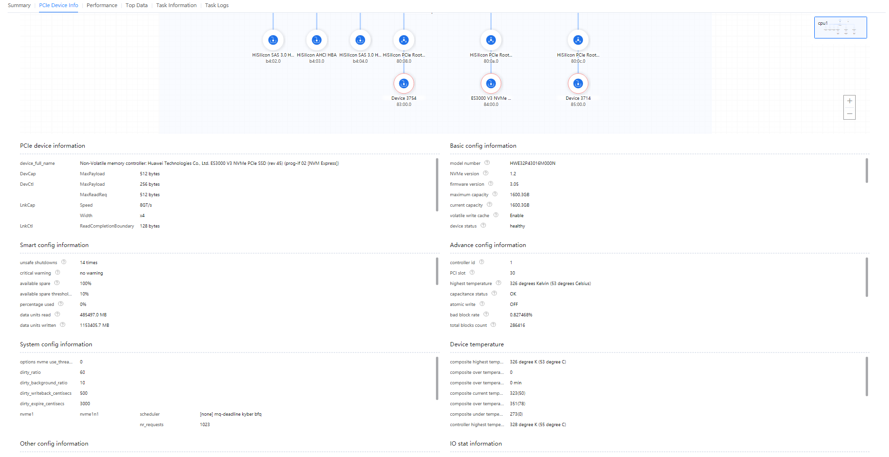

Prerequisites
An overall analysis task is complete.
Procedure
- In the Project Management area, click
 before the target project and analysis task.
before the target project and analysis task.The node list is displayed.
- Click the name of the target node to view the analysis result. You can click
 in the upper right corner to download the overall analysis data.
in the upper right corner to download the overall analysis data.- Click the node name. The Summary tab page is displayed by default, as shown in Figure 1. For details about the parameters, see the following tables.

- The Overview tab page displays the information about the CPU, memory subsystem, storage subsystem, network subsystem, and other configuration items. If the physical machine environment is used, the system component diagram is displayed.
- The Tuning Suggestions area is displayed only when the system detects metrics to be optimized. You can expand the area to view detailed suggestions and solutions. Tuning suggestions are provided for certain configuration items and marked with
 . Certain parameters are marked with
. Certain parameters are marked with  . You can move the cursor onto the icon to view detailed parameter description and tuning suggestions.
. You can move the cursor onto the icon to view detailed parameter description and tuning suggestions.
Table 1 Parameters in the CPU Package area Parameter
Description
CPU Model
Model of the CPU.
Cores
Number of CPU cores.
Max. Frequency
Maximum frequency of the CPU.
Current Frequency
Current frequency of the CPU.
CPU Core
ID
CPU manufacturer ID. For example, 0x48 indicates HiSilicon.
Max. Frequency
Maximum frequency of the CPU.
Current Frequency
Current frequency of the CPU.
L1I
Size of the L1 high-speed instruction cache of the CPU.
L2
Size of the L2 cache of the CPU.
L1D
Size of the L1 high-speed data cache of the CPU.
L3 cache
Cache Size (MB)
Size of the L3 cache of the CPU.
Nodes Sharing L3 Cache
NUMA nodes that share the L3 cache.
NUMA Nodes
Name
NUMA node name.
CPU Core ID
CPU core ID of the NUMA node.
Total Memory
Total memory size of the NUMA node.
Idle Memory
Idle memory size of the NUMA node.
NUMA Node Distance
Node
NUMA node name.
NOTE:The distance between NUMA nodes represents the costs of a NUMA node to access the memory of another node. A shorter distance means faster memory access from the CPU.
NUMA Balancing
NUMA Balancing
Setting of the NUMA balancing function.
Table 2 Parameters in the Memory Subsystem area Parameter
Description
Total Memory Capacity
Total memory capacity of the system.
DIMMs
Number of DIMMs.
Empty Slots
Number of empty memory slots.
DIMM List
Slot
Position of the DIMM slot.
Capacity
Capacity of the DIMM installed in the current slot.
Max. Rate
Maximum memory speed.
Configured Rate
Memory speed configured.
Type
Type of the DIMM.
Table 3 Parameters in the Storage Subsystem area Parameter
Description
Total Capacity
Total storage capacity.
Total Drives
Total number of drives.
Drives
Device Name
Storage device name.
Drive Model
Model of a drive.
Drive Capacity
Capacity of a drive.
Drive Type
Type of a drive.
RAID Controller Cards
Card ID
ID of the RAID controller card.
Controller Model
Processor model of the RAID controller card.
Cache Size (MiB)
Size of the cache.
Table 4 Parameters in the Network Subsystem area Parameter
Description
NICs
Number of NICs.
Network Ports
Number of network ports.
NICs
Latency
Latency of the NIC.
NUMA Node
NUMA node name.
Kernel Driver
Driver of the kernel.
Kernel Module
Kernel module name.
Subsystem
Subsystem.
Network Ports
Port
Network port name.
Device (B/D/F)
Bus/Device/Function (B/F/D) of the device.
Hardware ID
Hardware ID.
txkB/s
Total data transmitted per second, in KB.
rxkB/s
Total data received per second, in KB.
txpck/s
Total number of packets transmitted per second.
rxpck/s
Total number of packets received per second.
Max. Transmission Rate
Maximum transmission speed.
Current Transmission Rate
Current transmission speed.
Max. Data Load (byte)
Maximum data load.
Details
Details about the device.
Table 5 Parameters in the Runtime Environment Information area Parameter
Description
Basic System Information
BIOS Version
BIOS version information.
OS Version
OS version information.
Kernel Version
System kernel version information.
JDK Version
JDK version information.
glibc Version
glibc version information.
system_dmesg
System dmesg information. Click View Details for details.
docker info
Docker container information. Click View Details for details.
NOTE:This parameter is displayed only when a Docker container is installed on the host machine.
sysctl
Information about all system control configuration items. Click View Details for details.
kernelConfig
Kernel configuration information. Click View Details for details.
docker images
Docker container image information. Click View Details for details.
NOTE:This parameter is displayed only when a Docker container is installed on the host machine.
BMC Firmware Version
Firmware version of the BMC.
Memory Management System
SMMU
Status of the SMMU function.
PT Size
Size of the page table.
THP
Status of the transparent huge page (THP) function.
Standard Hugepage
Size of the standard huge page.
Number of Huge Pages
Number of the standard huge pages. The value 0 indicates that this parameter is not set.
Swap Partition
Size of the current swap partition.
Remaining Cache Time of Dirty Data (centisecond)
Remaining time of the dirty data in the cache.
Max. Ratio of Dirty Pages to Total Memory
Maximum ratio of the dirty page size to the total memory size.
Max. Ratio of Dirty Page Cache to Total Memory
Maximum ratio of the dirty page cache size to the total memory size.
Interval for Waking Up the pdflush Process to Refresh Dirty Data
Interval for waking up the pdflush process to refresh dirty data, in 1/100s.
Minimum Free Memory Reserved (KB)
Minimum size of the idle memory reserved, in KB.
NIC Firmware Version
NIC port and NIC firmware version.
VMs/Dockers
VM Libvirt Version
VM libvirt version.
KVM VM Configuration
KVM VM configuration parameters.
Docker Version
Docker version.
Kernel Parameters
HZ Value
HZ value.
NOHZ Timer
Status of the NOHZ timer.
cmdline
Startup script of the kernel.
Table 6 Parameters in the Storage Resource Configuration area Parameter
Description
Volumes
Number of volumes.
File Systems
Number of file system partitions.
RAID Arrays
Number of RAID arrays.
RAID Level
Volume Name
Logical drive name.
Volume ID
Logical drive ID.
RAID Controller Card ID
ID of the RAID controller card.
RAID Level
RAID level.
Logical Drive Strip Size
Size of the logical drive strip.
Current Logical Drive Read Policy
Current read policy of the logical drive.
Current Logical Drive Write Policy
Current write policy of the logical drive.
Current Logical Drive Cache Policy
Current cache policy of the local drive.
CacheCade Identifier
CacheCade identifier.
RAID Configuration
Current RAID configuration.
Storage Info
Device Name
Storage device name.
Prefetch Size of Drive Files (byte)
Prefetch size of the files on drives.
Storage I/O Scheduling Mechanism
I/O scheduling mechanism of the storage.
Drive Request Affinity Setting
Setting of the drive request affinity. The value 1 indicates that the I/O request is completed by the CPU that initiates the I/O request.
Drive Request Queue Length
Average number of read and write requests for a specified drive in a queue within a sampling interval.
Drive Queue Depth
Number of I/O operations that can be concurrently processed by the device when the host initiates an I/O request.
I/O Merging
I/O merging setting.
- 0: enables all types of merge attempts.
- 1: disables complex merge checks, but leaves the simple merge with the previous I/O request valid.
- 2: disables all types of merge attempts.
File System Info
Partition
Partition name.
File System Type
File system type of the partition.
Mount Point
Mount point of the current partition.
Mount Information
Mount information of the current partition.
Table 7 Parameters in the Network Port Configuration area Parameter
Description
Ports
Number of network ports.
Interrupt Aggregation
Port Name
Name of the network port.
adaptive-rx
Setting of the dynamic aggregation for a receive queue.
adaptive-tx
Setting of the dynamic aggregation for a transmit queue.
rx-usecs
Number of microseconds after at least one packet is received before an interrupt is generated.
tx-usecs
Number of microseconds after at least one packet is transmitted before an interrupt is generated.
rx-frames
Number of packets transmitted before an interrupt is generated.
tx-frames
Number of packets received before an interrupt is generated.
Offload
Port Name
Name of the network port.
rx-checksumming
Setting of the checksum function for received packets.
tx-checksumming
Setting of the checksum function for transmitted packets.
scatter-gather
Setting of the scatter/gather function.
TSO
Setting of the TCP segmentation offload (TSO) function.
UFO
Setting of the UDP fragmentation offload (UFO) function.
LRO
Setting of the large receive offload (LRO) function.
GSO
Setting of the generic segmentation offload (GSO) function.
GRO
Setting of the generic receive offload (GRO) function.
Queue
Port Name
Name of the network port.
Queues
Number of queues.
Interrupt NUMA Core Pinning
Port Name
Name of the network port.
Interrupt ID
Interrupt ID.
Interrupt NUMA Core Pinning Info
Information about the pinning of interrupts and NUMA cores.
xps/rps
Core pinning information of the transmit or receive queue.
Ring Buffer
NIC Name
NIC name.
TX (Byte)
Size of the sent cache ring buffer, in bytes.
RX (Byte)
Size of the received cache ring buffer, in bytes.
- Click PCIe Topology to view the PCIe topology analysis result, as shown in Figure 2. Table 8 describes the parameters.
- Move the cursor to a device icon in the topology view to view the device details and suggestions.
- Click + or - to zoom in or zoom out the topology view.
- You can move the cursor to the icon to view the parameter details.
- In the interrupt distribution statistics area, you can click
 to filter the hardware interrupts to be viewed. You can select interrupts from the drop-down list box.
to filter the hardware interrupts to be viewed. You can select interrupts from the drop-down list box.
Table 8 Parameters on the PCIe Device Info tab page Parameter
Description
Core binding status of the top 10 processes
Process Name
Process name.
Core Pinning Info
Core pinning of a process.
Interrupt Event
Event that has interrupts.
CPU core
CPU core ID
Thread Information of Top 10 Core Bound Processes
Thread information about the top 10 processes that are bound to CPU cores.
Hardware Interrupt Info
CPU Core
CPU core ID.
Device Info
Device information.
PCIe BDF Number
BDF number of a PCIe device.
Interrupt Event Name
Name of an interrupt event.
Interrupt Core Binding Info
Information about the interrupt core binding.
Interrupt Frequency (Times/s)
Interrupt frequency.
Network Device
Name of a network device.
Network Queue Name
Name of a network device queue.
xps_cpus
CPU bound to the XPS.
rps_cpus
CPU bound to the RPS.
rps_flow_cnt
Maximum number of flows in each queue.
Cores Bound to Hardware Interrupts
Number of CPU cores bound to hardware interrupts.
Cores Bound to XPSs
Number of CPU cores bound to XPSs.
Cores Bound to RPSs
Number of CPU cores bound to RPSs.
Interrupt Distribution Statistics
Software and Hardware Interrupt Frequency (times/s)
Frequency of software and hardware interrupts.
Figure 3 PCIe device info: NIC devices
Table 9 Parameters on the PCIe Device Info tab page (NIC device information) Parameter
Description
PCIe device information
device_full_name
Device name.
DevCap
Capability of the device.
DevCtl
Device scheduling information.
LnkCap
Link capability.
LnkCtl
Link scheduling information.
LnkSta
Link status.
Device Firmware and Driver Information
driver
Driver name.
version
Driver version.
firmware-version
Driver firmware information.
driver mount params
Driver parameter information.
Network Port Status Info
Network Name
Name of a network device.
Link detected
Link status of the NIC.
Speed
NIC speed.
Duplex
Work mode of the NIC.
Auto-negotiation
Whether auto-negotiation is enabled for the NIC.
Port Statistics
rxbyte/s
Number of bytes received per second.
txbyte/s
Number of bytes transmitted per second.
rxdrop/s
Number of received data packets that are discarded per second.
txdrop/s
Number of transmitted data packets that are discarded per second.
Receive bytes
Total number of bytes received by the interface.
Transmit bytes
Total number of bytes transmitted by the interface.
Receive drop
Total number of discarded data packets received by the driver.
Transmit drop
Total number of discarded data packets transmitted by the driver.
net_core_statistic
Net core statistics.
driver_statistic
Driver layer statistics.
driver_queue_statistic
Statistics about queues at the driver layer.
firmware_statistic
Microcode-layer statistics.
MAC_statistic
Physical layer statistics.
Interrupt Request Configuration
irqbalance
Balance status of an interrupt request.
RPS
Whether RPS is supported.
XPS
Whether XPS is supported.
RFS
Whether RFS is supported.
aRFS
Whether aRFS is supported.
Interrupt binding core settings
Number of cores bound to the interrupt.
Configuration information about the queue size and ring buffer size
RSS
Whether RSS is supported.
Queue Configuration
Queue configuration.
ring buffer Configuration
Ring buffer configuration.
Configuration Information of the NIC Offload Function
rx-checksumming
Whether the hardware checksum calculation on the receive end (RX) is supported.
tx-checksumming
Whether the hardware checksum calculation on the transmit end (TX) is supported.
tx-checksum-ipv4
Whether the IPv4-based TCP/UDP hardware checksum calculation on the TX is supported.
tx-checksum-ip-generic
Whether the IP checksum calculation of any protocol or protocol layer combination on the TX is supported.
tx-checksum-ipv6
Whether the IPv6-based TCP/UDP hardware checksum calculation on the TX are supported.
tx-checksum-fcoe-crc
Whether the hardware checksum calculation of the FCoE CRC32 is supported.
tx-checksum-sctp
Whether the SCTP hardware checksum calculation on the TX is supported.
scatter-gather
Whether scatter-gather is enabled.
tx-scatter-gather
Whether scatter-gather is enabled. ndo_start_xmit can process page-based fragmented skbs(skb_shinfo()->frags).
tx-scatter-gather-fraglist
Whether scatter-gather is enabled. ndo_start_xmit can process chained fragmented skbs(skb_shinfo()->frags).
tcp-segmentation-offload
Whether TSO is enabled.
tx-tcp-segmentation
Whether TCPv4 segmentation is enabled.
tx-tcp-ecn-segmentation
Whether hardware is enabled to correctly split data packets with the CWR bit for TCPv4 (tx-tcp-segmentation must be enabled) or TCPv6 (tx-tcp6-segmentation must be enabled).
tx-tcp-mangleid-segmentation
Whether the IP ID can be ignored. (The IP ID can increase with the segmentation or remain unchanged, based on the preferred settings of the drive.)
tx-tcp6-segmentation
Whether TCPv6 segmentation is enabled.
generic-segmentation-offload
Whether segment offloading is enabled.
generic-receive-offload
Whether GRO is enabled.
large-receive-offload
Whether LRO is enabled.
rx-vlan-offload
Whether VLAN CTAG hardware acceleration on the RX is supported.
tx-vlan-offload
Whether VLAN CTAG hardware acceleration on the TX is supported.
receive-hashing
Whether hash offloading on the RX is enabled.
rx-vlan-filter
Whether VLAN CTAGs filtering on the RX is enabled.
tx-fcoe-segmentation
Whether FCoE segmentation is enabled.
tx-gre-segmentation
Whether the TX segmentation offload of the GRE packet headers is enabled.
tx-gre-csum-segmentation
Whether the TX segmentation offload with checksum in the GRE packet headers is supported.
tx-ipxip4-segmentation
Whether TX segmentation offload of the IP4 or IP6 over IP4 packet header is supported.
tx-ipxip6-segmentation
Whether TX segmentation offload of the IP4 or IP6 over IP6 packet header is supported.
tx-udp_tnl-segmentation
Whether the TX segmentation offload of the UDP tunnel packet headers is supported.
tx-udp_tnl-csum-segmentation
Whether the TX segmentation offload with checksum in the UDP tunnel packet headers is supported.
tx-gso-partial
Whether partial generic segmentation offload is supported.
tx-sctp-segmentation
Whether the function of transmitting segments using SCTP packets is enabled.
tx-esp-segmentation
Whether the function of transmitting segments using ESP packets is enabled.
tx-udp-segmentation
Whether the function of transmitting segments using UDP packets is enabled.
tx-vlan-stag-hw-insert
Whether hardware acceleration for transmitting VLAN S-Tag packets is enabled.
rx-vlan-stag-hw-parse
Whether hardware acceleration for VLAN S-Tag transmission is enabled.
rx-vlan-stag-filter
Whether VLAN S-Tag receiving and filtering is enabled.
l2-fwd-offload
Whether Layer-2 data packets can be forwarded in hardware.
hw-tc-offload
Whether hardware offloading for traffic classifier (TC) is enabled.
esp-hw-offload
Whether hardware offloading for ESP packets on the TX is enabled.
esp-tx-csum-hw-offload
Whether ESP packet transmission checksum offload is enabled.
rx-udp_tunnel-port-offload
Whether UDP tunnel offloading is enabled on the RX.
tls-hw-tx-offload
Whether per-packet encryption is enabled for the NIC on the RX.
tls-hw-rx-offload
Whether per-packet encryption is enabled for the NIC on the TX.
rx-gro-hw
Whether hardware GRO is enabled.
tls-hw-record
Whether the NIC driver and firmware TCP processing can be used to replace the kernel network stack processing. This function is unavailable when the Linux network stack is used, such as the firewall function, QoS, and data packet scheduling.
Other network configuration information
mtu
Maximum size of data packets that can pass through the NIC.
Pause parameters
Pause frame configuration parameters.
Sysctl parameters
Settings of sysctl variables.
Figure 4 PCIe device info: NVMe devices
Table 10 Parameters on the PCIe Device Info tab page (NVMe device information) Parameter
Description
PCIe device information
device_full_name
Device name.
DevCap
Capability of the device.
DevCtl
Device scheduling information.
LnkCap
Link capability.
LnkCtl
Link scheduling information.
LnkSta
Link status.
Smart configuration
critical warning
Critical warning information.
available spare
Redundant space proportion.
available spare threshold
Redundant space alarm proportion.
percentage used
Used service life.
data units read
Volume of read data.
data units written
Volume of write data.
host read commands
Total number of host read times.
host write commands
Total number of host write times.
controller busy time
Busy time statistics of the controller.
power cycles
The number of power-on times.
power on hours
Power-on duration.
unsafe shutdowns
Number of unsafe shutdown times.
media and data integrity errors
Number of data errors.
number of error information log entries
Number of error logs.
warning composite temperature time
Time of minor warning about composite temperature.
critical composite temperature time
Time of major warning about composite temperature.
data status
Data health status.
Basic configuration information
Namespace
Namespace.
maximum capacity
Original maximum capacity.
current capacity
Current maximum capacity.
volatile write cache
Whether to support the write cache.
model number
Device model.
firmware version
Firmware version.
NVMe version
NVMe version.
device status
Device health status.
Advanced settings
controller id
Controller ID.
PCI slot
PCI slot number.
highest temperature
Highest historical temperature.
capacitance status
Supercapacitor health status.
atomic write
Atomic write status.
bad block rate
Bad block rate.
total blocks count
Total number of blocks.
bad blocks count
Total number of bad blocks.
factory bad blocks count
Number of bad blocks before delivery.
flash program failed count
Number of flash programming failures.
flash erase failed count
Number of flash erase failures.
maximum data transfer size
The maximum size of data that can be transmitted.
System configuration information
options nvme use_threaded_interrupts
NVMe thread use interrupt option.
dirty_ratio
Percentage of the dirty data that triggers synchronization to the available memory.
dirty_background_ratio
Percentage of the dirty data amount that triggers flushing to the available memory.
dirty_writeback_centisecs
Cycle of pdflush dirty data writing.
dirty_expire_centisecs
Duration when dirty data resides in the memory.
nvme1
Device details.
Device temperature information.
composite temperature
Temperature information.
exceed temperature threshold count
Number of times that the temperature exceeds the threshold.
exceed temperature threshold time
Time when the temperature exceeds the threshold.
composite highest temperature
Historical highest temperature of the entire drive.
composite over temperature threshold count
Overtemperature count of the entire drive.
composite over temperature threshold time
Overtemperature time of the entire drive.
composite current temperature
Current temperature of the entire drive.
composite over temperature threshold temperature
High temperature threshold of the entire drive.
composite under temperature threshold temperature
Low temperature threshold of the entire drive.
controller highest temperature
Historical highest temperature of the controller.
controller over temperature threshold count
Controller overtemperature count.
controller over temperature threshold time
Controller overtemperature duration.
controller1 current temperature
Current temperature of the controller.
controller1 over temperature threshold temperature
High temperature threshold of the controller.
controller1 under temperature threshold temperature
Low temperature threshold of the controller.
Other configuration information
power states
Power consumption level of the device.
Write mode
Value of the write mode.
self-test
Diagnosis test result.
disk writes per day
Average amount of data written to the disk per day.
Device I/O statistics
Range (µs)
I/O latency range.
Read I/O Frequency (times/s)
Read I/O frequency.
Write I/O Frequency (times/s)
Write I/O frequency.
- Click the Performance tab page. The performance metrics analysis result is displayed, as shown in Figure 5. For details about the parameters, see the following tables.
- Performance metrics analysis result can be displayed in line charts or lists. You can click
 in the upper right corner of the tab page to switch between the view modes.
in the upper right corner of the tab page to switch between the view modes. - Line chart displays the time series data of each performance metric in the entire collection process. You can drag the time bar to view the time series data in a specified period.
You can click
 to the right of Analysis Object/Metric to filter performance metrics to view the corresponding line charts.
to the right of Analysis Object/Metric to filter performance metrics to view the corresponding line charts. - The lists display the average value of each performance metric. If the average value of a metric exceeds the reference value, the metric is marked with
 and the tuning suggestions and solutions are displayed.
and the tuning suggestions and solutions are displayed.You can click
 on the right of a parameter and drag the left or right block or enter a number to set the lower or upper threshold.
on the right of a parameter and drag the left or right block or enter a number to set the lower or upper threshold.
Table 11 Parameters in the CPU area Parameter
Description
CPU Usage
CPU
CPU core (all indicates the entire CPU).
%user
Percentage of CPU time occupied when the system is running in user mode.
%nice
Percentage of CPU time occupied by the process that has changed the priority when the system is running in user mode.
%sys
Percentage of CPU time occupied when the system is running in kernel mode. This metric does not include the time spent on service hardware and software interrupts.
%iowait
Percentage of CPU time during which the CPU is idle and waiting for storage I/O operations.
%irq
Percentage of CPU time spent on service hardware interrupts.
%soft
Percentage of CPU time spent on service software interrupts.
%idle
Percentage of CPU time during which the CPU is idle and the system has no unfinished storage I/O request.
%cpu
CPU usage in non-idle state
max_use
Highest usage and time point within the sampling period.
Average Load
runq-sz
Length of the running queue, that is, the number of tasks to be run.
plist-sz
Number of tasks in the task list.
ldavg-1
Average system load in the last minute. The value is equal to the average quantity of running or runnable tasks (in R state) plus the average quantity of uninterrupted sleep tasks (in D state) in a specified period.
ldavg-5
Average system load in the last 5 minutes.
ldavg-15
Average system load in the last 15 minutes.
blocked
Number of blocked tasks waiting for I/O operations.
Table 12 Parameters in the Memory area Parameter
Description
Memory Usage Statistics
memfree (KB)
Available free memory size, in KB. The buffer and cache are not included.
avail (KB)
Available memory size, in KB. The buffer and cache are included.
memused (KB)
Used memory size, in KB. The buffer and cache are included.
%memused
Percentage of used memory, that is, memused (KB)/(memused (KB) + memfree (KB)).
buffers (KB)
Memory used as the buffer by the kernel, in KB.
cached (KB)
Memory used as the cache by the kernel, in KB.
active (KB)
Active memory size, in KB. The memory used recently will not be recycled unless absolutely necessary.
inact (KB)
Inactive memory size, in KB. The memory seldom used recently meets the recycling conditions.
dirty (KB)
Size of the memory where data is to be written back to the drives, in KB.
Page Statistics
pgpgin/s
Data swapped from drives or the swap partition to the memory per second, in KB.
pgpgout/s
Data swapped from the memory to drives or the swap partition per second, in KB.
fault/s
Number of page faults (major page faults + minor page faults) generated in the system per second. This parameter is not the I/O page fault number because certain page faults can be resolved without I/O operations.
majflt/s
Number of major page faults generated per second. A memory page needs to be loaded from drives.
pgscank/s
Number of pages scanned by the kswapd daemon per second.
pgscand/s
Number of pages scanned per second.
%vmeff
Measurement metric of the paging recycling efficiency. If the value is close to 100%, almost every page can be obtained at the bottom of the inactive list. If the value is smaller than 30%, the virtual memory has certain problems. If no page is scanned within the interval, the value is 0.
Switch Statistics
pswpin/s
Total number of inward swap partition pages per second.
pswpout/s
Total number of outward swap partition pages per second.
NUMA Memory Statistics
Name
NUMA node name.
interleave_hit
Number of memory pages that are successfully allocated to the node based on the interleave policy.
local_node
Number of memory pages that are successfully allocated to the processes running on the node.
numa_foreign
Number of memory pages which should be preferentially allocated by the local node but are actually allocated by other nodes. It corresponds to numa_miss.
numa_miss
Number of memory pages which should be preferentially allocated by other nodes but are actually allocated by the local node. It corresponds to numa_foreign.
numa_hit
Number of memory pages that are preferentially and successfully allocated by the local node.
other_node
Number of memory pages that are preferentially and successfully allocated from the current node for the processes running on other nodes.
Table 13 Parameters in the Storage I/O area Parameter
Description
Block Device Usage
DEV
Block device name.
tps
Total number of I/O transmissions per second. A transmission is an I/O request to a physical device. Multiple logical requests sent to a device can be combined into a single I/O request. The transfer size is uncertain.
rd (KB)/s
Data read from the device per second.
wr (KB)/s
Data written to the device per second.
avgrq-sz
Average data size (in sectors) of each storage I/O operation.
avgqu-sz
Average length of drive request queues.
await
Average time (in milliseconds) consumed by each request (from the time when the request is sent to the time when the request is processed), including the waiting time of the requests in a queue.
await = Seek time + Queue time + Service time
svctm
Average time (in milliseconds) for the system to process each request. The time consumed in the request queue is not included.
%util
Percentage of CPU time consumed when an I/O request is sent to a device (bandwidth usage of a device). When the value is close to 100%, the drive is almost saturated.
max_tps
Maximum number of I/O transfers per second.
max_util
Maximum CPU usage.
Table 14 Parameters in the Network I/O area Parameter
Description
Network Device Statistics
IFACE
Network port name.
rxpck/s
Total number of packets received per second.
txpck/s
Total number of packets transmitted per second.
rxkB/s
Total data received per second, in KB.
txkB/s
Total data transmitted per second, in KB.
eth_ge
Standard network port rate, such as 100GE, 50GE, 40GE, and 10GE.
Network Device Fault Statistics
IFACE
Network port name.
rxerr/s
Number of damaged packets received per second.
txerr/s
Total number of errors per second when packets are transmitted.
coll/s
Number of collisions per second when packets are transmitted.
rxdrop/s
Number of packets discarded by the receiving end of an NIC per second when the Linux buffer is full.
txdrop/s
Number of network packets discarded by the transmit end of an NIC per second when the Linux buffer is full.
txcarr/s
Number of carrier errors per second when packets are transmitted.
rxfram/s
Number of frame synchronization errors per second when packets are received.
rxfifo/s
Number of first input first output (FIFO) overflow errors per second when packets are received.
txfifo/s
Number of FIFO overflow errors per second when packets are transmitted.
Table 15 Parameters in the Power Consumption area Parameter
Description
Average Power (W)
Average power of the system.
Max. Power (W)
Maximum power of the system.
Min. Power (W)
Minimum power of the system.
- Performance metrics analysis result can be displayed in line charts or lists. You can click
- Click the Typical Configuration tab to view the typical configurations obtained from the test of different solutions.
You can obtain the typical configuration information about different test scenarios based on the projects created in Project Management.
Click the
 button on the right of Hardware and Software Configuration to view the detailed configuration information. Hover the mouse pointer over
button on the right of Hardware and Software Configuration to view the detailed configuration information. Hover the mouse pointer over  to view the indicator optimization suggestions. Hover the mouse pointer over
to view the indicator optimization suggestions. Hover the mouse pointer over  to view the specific path of the recommended configuration.
to view the specific path of the recommended configuration.You can search for a component in the search box.
Figure 6 shows the Typical Configuration tab page, using the big data scenario as an example. - Click the Tracing Data tab to view the details.
The Tracing Data tab page is available only when Collect Tracing Data is selected and tracepoint information is input to the procedures to be analyzed in the Database scenario. For details about how to input tracepoint information, see section "Common Operations > Collecting MySQL Trace Data".
For example, if you select the MySQL task in the Database scenario (see Figure 7), you can click Download Tracing Data File in the upper right corner of the page.
- Click the Top Data tab to view the data collected by the top command.
The Top Data tab page displays the status of each process. You can click the download button in the upper right corner of the page to export the overall analysis data.
Figure 8 Top Data tab page
- Click the Task Information tab to view the detailed configuration and sampling information about the task on the current node.
If the task fails to be executed, the failure cause is displayed on the Task Information tab page.
- Click the Task Logs tab to view the logs about the sampling and analysis processes.
- Click the node name. The Summary tab page is displayed by default, as shown in Figure 1. For details about the parameters, see the following tables.